Ergänzen Sie das Gespräch.
aSchreiben Sie die Wörter mit Artikel an die richtige Stelle.
bSchreiben Sie zehn Nomen aus den Lektionen 1 bis 3. Ihre Partnerin / Ihr Partner sucht den Artikel im Wörterbuch.
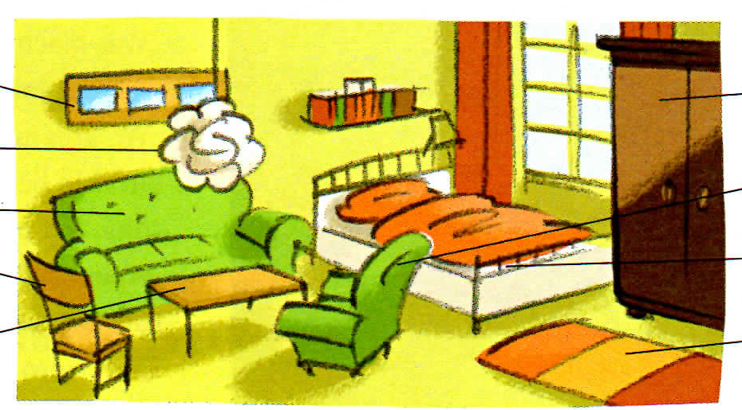
Ergänzen Sie und vergleichen Sie.
| Deutsch | Englisch | Meine Sprache |
|---|---|---|
| der Mann, der Tisch | the man, the table | |
| das Kind, das Bett | the child, the bed | |
| die Frau, die Lampe | the woman, the lamp |
aHören Sie und kreuzen Sie an.
bHören Sie noch einmal und sprechen Sie die Zahlen nach.
Hören Sie und notieren Sie die Preise.
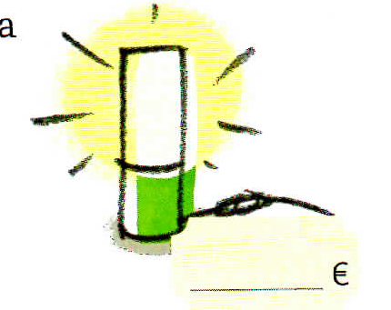
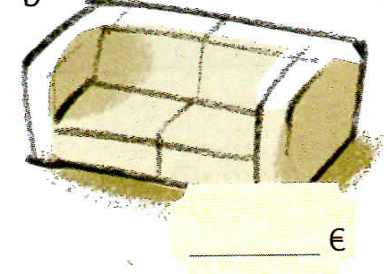
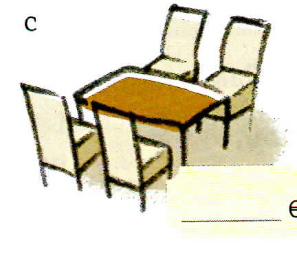
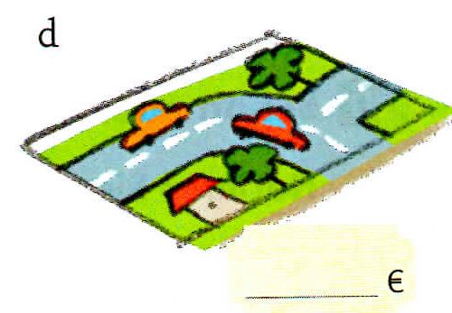
Ergänzen Sie. Hören Sie dann und kontrollieren Sie.
| der | die | das |
|---|---|---|
| er | sie | es |
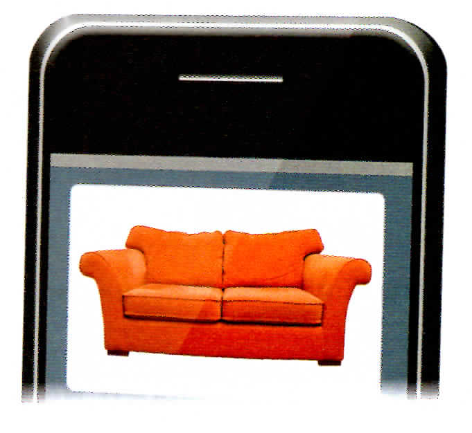
aOrdnen Sie die Buchstaben.
bSehen Sie die Bilder an und ergänzen Sie die Wörter aus a.
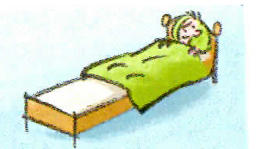
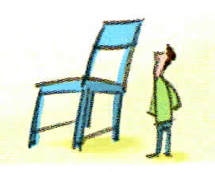
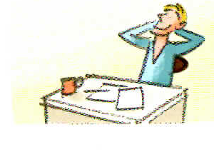
Kreuzen Sie an und finden Sie das Lösungswort.
| Meine Punkte | 🟢 | 🟡 | 🔴 |
|---|---|---|---|
| Wörter (10) | 8–10 | 6–7 | 0–5 |
| Strukturen (8) | 7–8 | 5–6 | 0–4 |
| Kommunikation (7) | 6–7 | 4–5 | 0–3 |
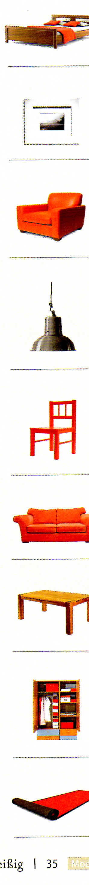
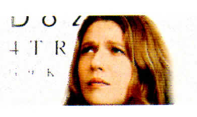
Ergänzen Sie den Artikel und das Wort.
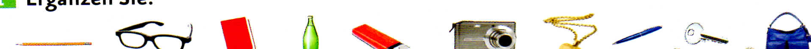
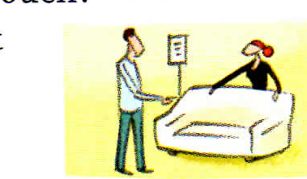
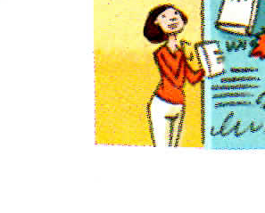
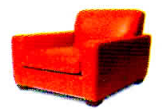
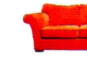
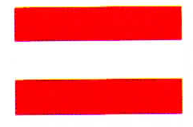
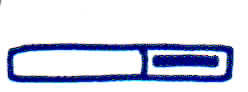
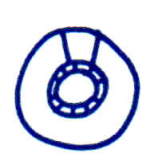
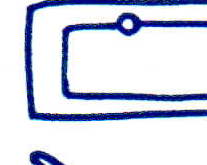
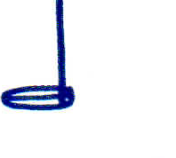
bZeichnen Sie einen Gegenstand. Ihre Partnerin / Ihr Partner rät.
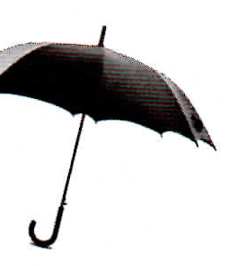
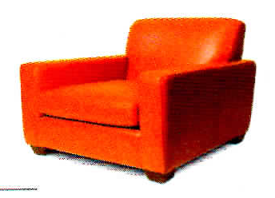
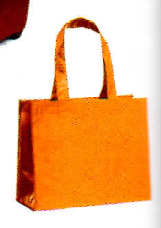
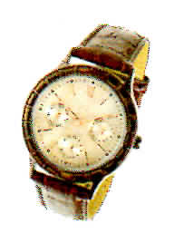
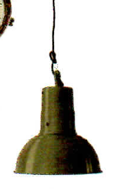
aOrdnen Sie zu.
bErgänzen Sie das Gespräch.
| Meine Punkte | 🟢 | 🟡 | 🔴 |
|---|---|---|---|
| Wörter (12) | 10–12 | 7–9 | 0–6 |
| Strukturen (7) | 6–7 | 4–5 | 0–3 |
| Kommunikation (6) | 5–6 | 4 | 0–3 |
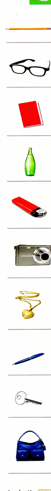
Schreiben Sie die Wörter an die richtige Stelle.
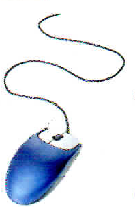
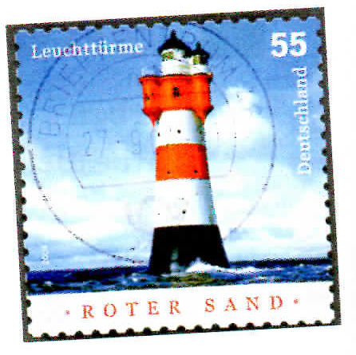
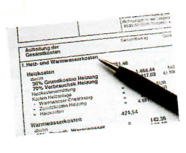
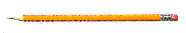
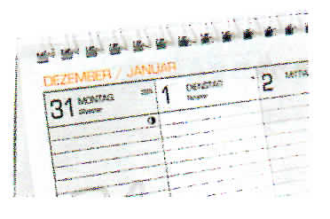
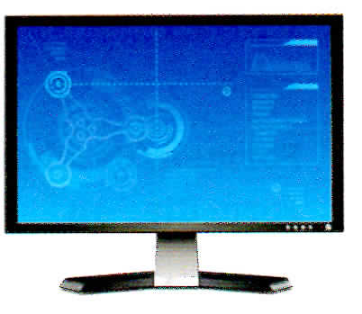
aSuchen Sie im Wörterbuch und ordnen Sie zu.
bSuchen Sie zehn Nomen aus den Lektionen 1 bis 5. Ihre Partnerin / Ihr Partner sucht die Pluralform im Wörterbuch.
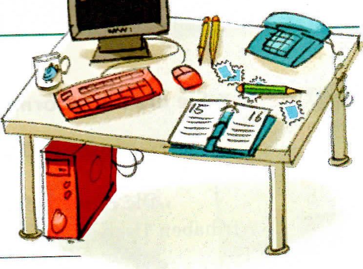
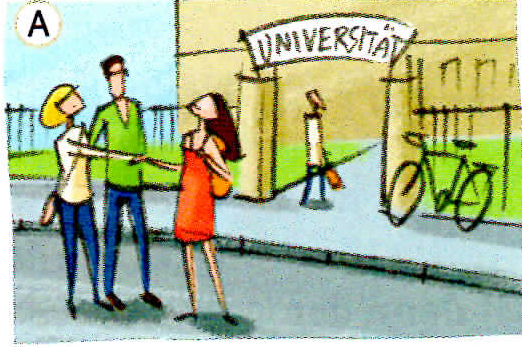
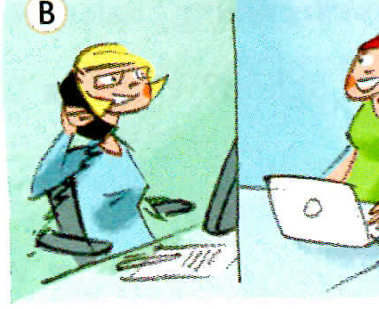
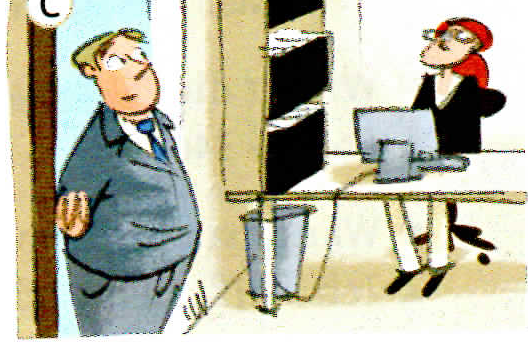
| Meine Punkte | 🟢 | 🟡 | 🔴 |
|---|---|---|---|
| Wörter (5) | 4–5 | 3 | 0–2 |
| Strukturen (14) | 12–14 | 8–11 | 0–7 |
| Kommunikation (5) | 4–5 | 3 | 0–2 |
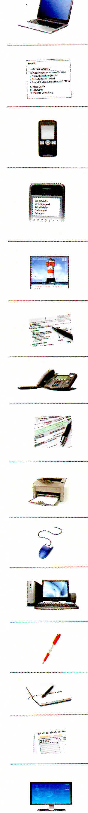
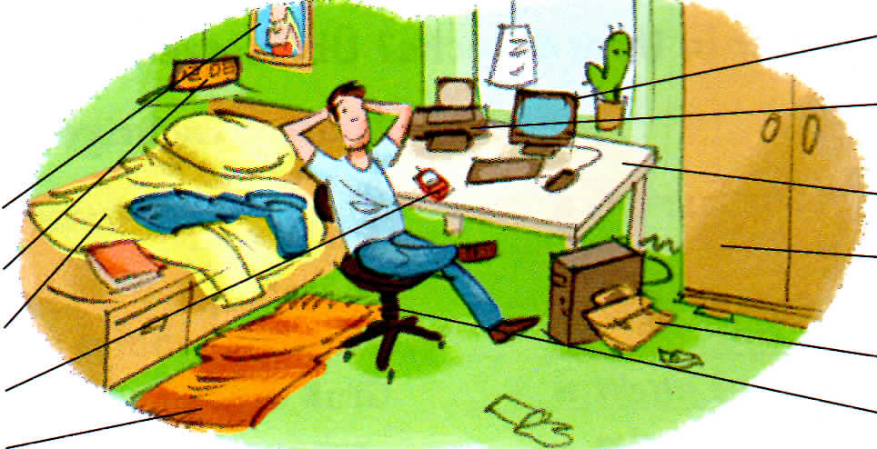
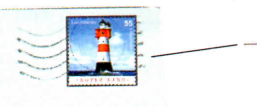
aWelche Zahlen hören Sie? Kreuzen Sie an.
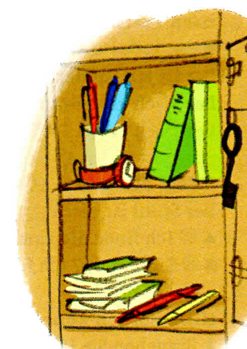
aErgänzen Sie.
bWelcher Tisch passt zu dem Text in a? Kreuzen Sie an.
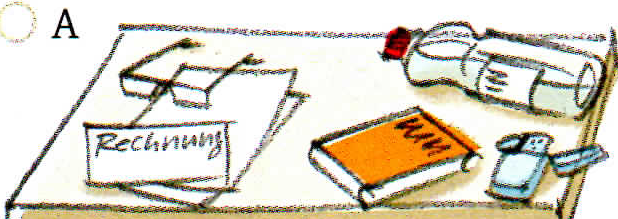
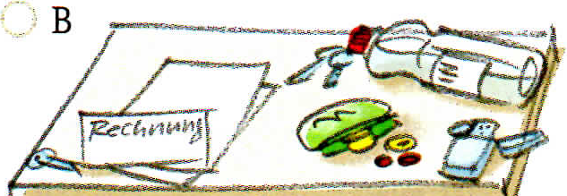
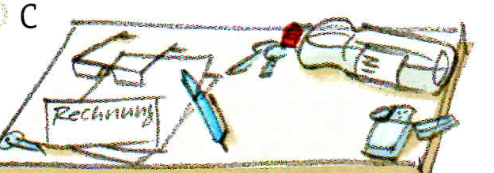
Lesen Sie und ergänzen Sie. Dann markieren Sie: 🟢 das kann ich · 🟡 das kann ich fast · 🔴 das muss ich noch üben.
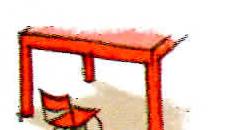
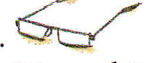
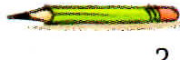
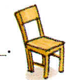
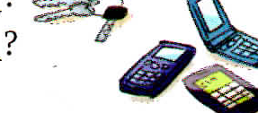
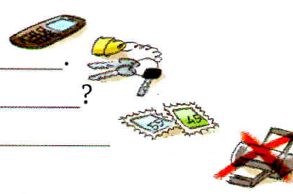
aSuchen Sie Produkte in Prospekten oder im Internet.
| Produkt | Material | Farbe(n) | Preis |
|---|---|---|---|
| Ring | Kunststoff | braun / schwarz | ... |
bSchreiben Sie eine Produktinformation.
| Deutsch | Englisch |
|---|---|
| Friseurin | hairdresser |
| Was arbeitest du? | What do you work with? |
| die Schere | scissors |